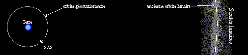

| plan du site |
Le glossaire de l'espace
Bulb - Ophiuchus IV - Personnes - Terre et ses environs - Vaisseaux
Ce glossaire présente tout ce qui est extérieur à la Terre.
Trou Noir : quelque part dans l'espace existe un trou noir qui sert de cimetière aux Bulbs.
Ophiuchus IV
Bermann City : capitale d'Ophiuchus IV, construite sur un promontoire au-dessus du Fleuve Acajou. Habitée par des scientifiques.
Fondée en 2020 EC, A partir de 2240, elle se dépeuple (chasse au Bulb, régression de la population) et fut abandonnée en 2270 par les quelques habitants qui y survivaient.
Bûcherons : exploitants de la Forêt des Anges. Ils sont regroupés en une junte dirigée par un syndic. Ils vivent dans des Sawer Bull, véhicules hauts de 4 étages qui leur servent d'habitation et de scierie. Il est apparu de nombreuses régressions du comportement : chamanisme, croyance à la magie, alcoolisme ...
Cité des Lacs : cité d'Ophiuchus IV. Base de l'expédition chargée d'étudier le Bulb écrasé en 2232.
Cochmouth :
Dans CR-6, il est dit : animal indigène d'Ophiuchus IV, ressemblant à un énorme cochon à trompe et à fourrure de mammouth.
Dans CR-8, il est dit : hybride de cochon, d'ovin et d'un animal d'Ophiuchus IV qui s'apparentent aux anciens mammouths sans en avoir la taille.
Fleuve Acajou : fleuve qui prend naissance dans la Forêt des Anges, puis longe Bermann City où il fait deux kilomètres de large.
Forêt des Anges : importante forêt jungle d'Ophiuchus IV. Ainsi nommée, car ses habitants, les Monkeys furent pris pour des anges.
Grande Muraille Délabrée : chaîne montagneuse haute de quinze mille mètres, ressemblant de loin à de gigantesques ruines. Les vents rabattant y sont violents. C'est dans ces chaînes que s'écrasa le Bulb.
Monkeys : animal bipède, arboricole et indigène vivant dans la Forêt des Anges sur Ophiuchus IV. Ils furent assimilés à des anges en raison de leurs membres supérieurs qui ressemblent à des ailes d'oiseaux, puis, lors des luttes avec les Bûcherons, furent renommés Monkey. Ils vivent dans des huttes modestes.
Ophiuchus IV : planète découverte en 2015 et colonisée à partir de 2020. Cette première colonisation se fit suivant un programme étudié à l'avance et fut un succès jusqu'en 2050, quand arrivèrent les seconds colons, rescapés de la Terre en train de plonger dans l'ère glaciaire, ce qui désorganisa complètement l'embryon de société. L'équilibre économique ne fut atteint qu'en 2100, les rescapés ayant largement puisé dans les réserves d'Ophiuchus IV. Se côtoyaient alors deux sociétés assez antagonistes. Le second siècle s'annonçait prometteur quand apparurent de graves régressions psychologiques et mentales qui alarmèrent les médecins et les psychiatres, puis le gouvernement. En 2230, les prévisions les plus optimistes annonçaient pour le siècle suivant la disparition totale des cités, de la culture et de la technologie pour laisser place à des tribus barbares et à la féodalité. L'écrasement du Bulb à cette date offrit à la population des cités une alternative à la régression, le Projet Initial.
Le Terra est alors envoyé pour trouver des Bulbs vivant, ce qu'il fera vingt ans plus tard. Vers 2250, le contact se perd entre les citadins de Bermann City et les communautés installées dans la Forêt des Anges. Des épidémies dues au pourrissement du Bulb écrasé ravagent les populations, la faune et la flore. Vers 2270, les survivants de Bermann City quittent la planète à bord du Retour.
Au XXVI° siècle, les passagers du Terra, décident de revenir à Ophiuchus IV, pour réparer leur vaisseau et observer la situation. On ignore s'ils y sont parvenus et ce qu'ils ont découvert.
Ophiuchus IV dans la réalité: traditionnellement dans la science fiction, lorsqu'une planète est indiquée par un nom suivi d'un numéro, le nom est celui d'une étoile et le numéro est le rang de la planète autour de l'étoile. Par exemple la Terre est appelée Sol 3, car c'est la troisième étoile gravitant autour de notre étoile, appelée Soleil ou Sol.
Le problème dans le cas d'Ophiuchus IV est que Ophiuchus n'est pas le nom d'une planète, mais d'une constellation d'étoiles (aussi appelée le Serpentaire) situé entre les constellations d'Hercule, du Scorpion et du Sagittaire. Une constellation est un groupe d'étoile selon une vue terrestre et ne correspond pas à un groupe d'étoile située dans la même région galactique (certaines sont distantes de quelques années lumière, d'autres de quelques centaines).
Une étoile particulièrement intéressante dans cette constellation est l'étoile de Barnard. Elle est proche (5,9 années lumière), on sait qu'elle possède deux planètes (une faisant 0,8 masse de Jupiter, l'autre 0,4) mais elle ne peut pas convenir pour Ophiuchus IV : c'est en effet une naine rouge.
Sawer Bull : voir Bûcherons
Vaisseaux
Passager : nom des habitants du Terra.
Retour : vaisseau spatial, identique au Terra. Il quitta Ophuchius IV (probablement vers 2270) avec environ deux cents personnes, tous survivants de la société technologique et scientifique de Bermann City. Ils envisageaient de rejoindre directement la Terre, mais des ondes radios leur apprirent la colonisation du Bulb. Il le rejoignit en 2310. Trois ans plus tard, 150 personnes repartent en direction de la Terre. Le contact radio se maintient une cinquantaine d'années. On ignore ensuite leur sort.
Terra : vaisseau spatial, initialement chargé de faire la liaison entre la Terre et Ophiuchus IV. En 2232, il servit à rechercher les Bulbs, et en découvre un groupe après vingt ans de recherches. Après la colonisation du Bulb, il fut abandonné avec des marginaux et des détenus. Ceux-ci parvinrent à le retaper et rejoignent le Bulb en 2342.
En 2484, il est gouverné par un triumvirat. Ses habitants (passager ou voyageur) sont au nombre de 3000. Le tiers de la population se regroupe en une secte qui refuse l'utilisation du Bulb et méprise les bulbiens. La population de Terra est surtout composé d'affairistes, tenancier de bordel et de trafiquants de tout genre, que les bulbiens viennent visiter pour s'encanailler. Leur hantise est que le Bulb accélère et les laisse en plan, et pour éviter cela, ils cherchèrent à empêcher la diffusion des travaux d'Ivan Mikelevitz. Leur complot échoua.
Entre 2484 et 2563, une révolution plaça au pouvoir un collectif qui décida de rejoindre Ophiuchus IV pour réparer le vaisseau, puis de rallier directement la Terre. On ignore ce qu'ils devinrent.
Vaisseaux spatiaux : on en connaît deux, le Terra et le Retour.
Voyageur : nom des habitants du Terra.
Le Bulb
Bulb ,aussi appelé Moby Dick, puis MD, puis SAS : bulb colonisé par les humains, âgé d'environ 200 ans en 2256 ou de 450 ans en 2484. Taille : 50 km de long et 8 de diamètre. La colonisation débuta en 2256 par l'utilisation d'un Œil, mais ne fut réellement effective qu'en 2265. Elle fut violente et guerrière (le Bulb fut châtré) sous la conduite du général Panz. Sugar Vernon réussit à instaurer un Pacte d'Harmonie vers 2300, plus ou moins respecté. Il y eut la cellule clandestine de navigation chargée de faire avancer le Bulb vers la Terre et qui le tortura. Le Bulb profitant de la scission entre Salt et Sugar fit demi-tour. Deux autres bulbs lui vinrent en aide, mais les Bulbiens les détruisirent à coup d'ogives nucléaires De 2595 à 2850, l'intérieur est modifié pour créer la Verticalité. Il finit par atteindre la Terre en 2890 et à se placer en orbite géostationnaire. Des Sugar débarquèrent alors sur Terre : ce sont les Ragus.
Il y eut plusieurs guerres entre les Salt et les Sugar, malgré, l'existence de la Confédération SAS. Les Sugar eurent longtemps le dessus, mais les Salt furent vainqueurs, probablement en lâchant les Garous et mirent en oeuvre les moyens de garder la Terre dans l'ère glaciaire (voir Abominable Postulat), noyautèrent la société glaciaire en devenant Aiguilleurs et commencèrent l'envoi des Roux. Quelques groupes de Sugar parvinrent à survivre en se cachant, comme les Trues.
En 2350 EG (4230 EC), il orbite toujours autour de la Terre, Lien Rag, Kurts, puis Lienty Ragus parviennent à le rejoindre, mais y restent coincés, et leur raison ne reste pas toujours intacte face à la fantasmagorie des lieux. La population humaine y est quasi-inexistante, de nombreux garous se promènent en liberté et mangent tout ce qu'ils peuvent et l'ordinateur, chargé de produire des Roux et des animaux résistants au froid, est déréglé et produit aussi des Garous et en lâchent dans l'espace : le SAS est ainsi entouré de cadavres qui flottent dans l'espace. Des variations importantes de gravité et de température ont souvent lieu et certaines salles de la partie Sugar sont envahies par une végétation exubérante qui leur donne des aspects de jungles. D'autres salles ne sont plus éclairées et sont envahies par les eaux et désignées sous le nom de marécages. Il meurt en 2373 EG (4253 EC)
Situation du SAS : contrairement à ce que l'on pourrait penser, on ne peux pas voir le soleil du Bulb, qui se trouve nettement en dessous des strates lunaires.

Bulb : animal spatial. Corps allongé, d'une longueur de cinquante kilomètres et d'un diamètre variant entre huit et quinze kilomètres. Possède un resserrement au tiers de son corps, qui lui donne vaguement la forme d'un bulbe d'oignon. Leur espérance de vie est de 3 000 ans.
Les Bulbs communiquent par écriture mentale. Ils inscrivent leur pensée directement dans le cerveau de leur interlocuteur, qui peut l'effacer ou l'enregistrer.
La faune d'un bulb se compose de laineux, de gargouilles et de rongeurs aux dents de vitriol.
A leur mort, les autres bulbs jettent la dépouille du mort dans un trou noir qui tient lieu de cimetière.
Vers 2050, au cours d'un de ses voyages, le Terra s'égara et découvrit des astéroïdes étranges et de tailles diverses (quelques kilo à plusieurs tonnes) formant des nuages sidéraux de dizaines de kilomètres de long, qui furent analysé comme les excréments fossilisés d'un animal de taille gigantesque. Puis en 2232, un Bulb s'écrasa sur Ophiuchus IV.
Bulbien : nom des habitants du Bulb. Le langage est un idiome composé de 30% de français et de 70 % d'anglais.
Caprithropes : garoux monozoothropes issus d'humains et de chèvres.
Cartérine : produit fabriqué à partir de kératine et servant à colmater les brèches de la carapace du Bulb. Seulement, cette kératine est extraite de cette même carapace, qui en est donc affaiblie.
Cellule Clandestine de Navigation : cellule crée clandestinement en 2409 par Sugar V pour accélérer le Bulb, en d'autres termes d'utiliser ses terminaisons nerveuses pour lui infliger des douleurs. Son action causa la rupture de Fémur en 2411. Ses directeurs furent Harowelle de 2409 à 2422, puis le général Warren de 2422 à 2445. En 2425, le professeur Mikélévitz, qui soupçonnait son existence, fut assassiné. En 2460, le directeur est Gibsen.
Bien que son action néfaste sur la santé du Bulb fut mise en évidence, elle resta opérationnelle et est encore en activité en 2890.
Code Rubistein : écrit par Héléna Rubistein, il regroupe toutes les données des systèmes neuro-cervicaux du Bulb, ainsi que les procédures pour contrôler et diriger le Bulb.
Confédération SAS : association entre les Salt et les Sugar signée en 2584 (note du Webmestre : peut-être à l'initiative de Liz Sugar X).
en 2595, eurent lieu les premières tentatives de verticalité.
en 2652, une guerre civile opposa les Salt aux Sugar.
en 2850, la verticalité est achevée.
en 2890 eut lieu la troisième guerre civile.
Crododile de l'espace ou Mâchoire ou Roark : animal de l'Espace d'une longueur d'une dizaine de kilomètres, composé principalement d'une mâchoire qui fait le tiers de la longueur de l'animal.
Vers 2220, un écho radar à bord du Terra montra un animal long de plusieurs kilomètres doté d'une mâchoire formidable.
Un roark avait attaqué le Bulb qui s'écrasa sur Ophiuchus IV et tomba avec lui.
En 2890, un Roark s'attaque au Bulb.
Cynothropes : garoux monozoothropes: corps d'hommes ou de femmes avec des têtes de singes ou de chiens.
Dumb-Bell : nom qu'utilisa Charlster pour désigner le Bulb, qu'il avait découvert au télescope.
EB : ère du Bulb selon un calendrier interne (mais il n'est est pas fait question dans les chroniques glaciaires relatives au Bulb). L'an 2370 EG correspond à 1276 EB (ère du Bulb). Mais il n'est pas précisé à quoi cette ère correspond, s'agit-il d'années écoulées depuis la découverte d'Ophiuchus (2015 EC), le début de l'ère glaciaire (2050 EC), depuis la colonisation du Bulb (2256 EC), depuis la satellisation autour de la Terre (2890 EG) ou depuis la prise de pouvoir des Salt ?
Eglise de la Rénovation Apostolique d'Ophiuchus : église qui avait ses fidèles dans le SAS (Note du Webmestre : Sont-ils issus de la secte des Enfants d'Ophiuchus ?). En 2368 EG, elle compte 51 membres sous la conduite de Faro. A la mort du Bulb, Faro sacrifie et massacre tous les membres de la secte.
Enfants d'Ophiuchus : secte qui apparu chez les Salt vers 2840. Mouvement de protestation contre le retour vers la Terre et désirant revenir vers Ophiuchus IV. Peu à peu, ils prirent le contrôle de Salt.
Extérieur : appellation de la surface externe du Bulb.
Eye : nom du premier Œil découvert par les humains.
Fémur : pilier principal de la colonnade Ouest soutenant la cavité où se sont installés les Sugar. Il fait 8 kilomètres de haut. Par manque de calcium, il s'est rompu en 2411. Ce n'est qu'en 2486 que les Bulbiens s'en rendirent compte et qu'il fut ressoudé.
Flatty : premier Bulb colonisé, âgé de 950 ans en 2256. Il vivait à l'écart du groupe de Bulbs, car parasité par un Œil. Cela permis son accostage par les humains en 2256 et son exploration, puis sa colonisation débuta. Les Ophiuchusiens le crurent mourant, mais en fait, il vivait une période de mue. L'Œil fut isolé et envoyé vers un autre Bulb (MD). MD étant contrôlé en 2265, la colonie de Flatty se réinstalla sur MD, mais quelques personnes décidèrent de rester sur Flatty, principalement des paysans. Pendant plusieurs siècles, la simple survie imposa comme seule activité l'agriculture, au point que la lecture fut interdite, et des techniques simples comme la menuiserie oubliées. Ils décidèrent également de revenir vers la Terre, mais le firent plus lentement et ne parvinrent près de la Terre que peu de temps après la fin de l'ère glaciaire. Ayant vu les cadavres de garous autour du premier bulb, ils se placèrent secrètement en orbite, à proximité d'Altaï. A cause de la surpopulation (150 000 habitants alors que Flatty peut recevoir, dans des conditions de vie acceptable, 50 000 personnes) et des divergences quand au moyen de résoudre ce problème, il se divisèrent entre deux groupes (vers 2350 EG) qui de livrèrent une guerre civile : d'une part les Eugénistes, qui voulaient contrôler les naissances par des moyens contestables, d'autre part les Naturalistes qui souhaitent des méthodes anticonceptionnels. Chaque groupe envoya quelques-uns uns des leurs sur Terre, pour essayer de retrouver des connaissances scientifiques et médicales. Les Eugénistes s'installèrent dans l'hémisphère sud, dans l'Archipel Crozet dans l'espoir d'atteindre Concrete Station, les Naturalistes créèrent un centre de recherches à proximité du Gouffre aux Garous. Les navettes étant en panne, ils ne peuvent plus revenir vers Flatty où une épidémie sévit, abaissant la population à 40 000 personnes.
Observant Altaï, Louria repéra Flatty qu'elle nomma d'abord Shade. Jossoye, le découvrant à son tour, le nomma Nebula.
Fomeg : nom de l'Œil dans le langage des Bulb.
Gardian : nom des humains habitant Flatty.
Gargouille : voir sphales.
Garoux : espèces animales créées génétiquement par les Salt, afin d'obtenir une main-d'oeuvre bon marché. Parmi les différentes espèces, il y a les polyzoothropes, les monozoothropes, les caprithorpes et les cynothropes. Ils furent également utilisés quand les Salt veulent envahir les Sugar. A l'époque de Lien Rag, ils sont encore produits sans aucun contrôle, et ils sont nombreux à vivre dans les couloirs de Bulb. La machine déréglée en produit de temps en temps à la place de Roux, et les Bulbiens pour s'en débarrasser, les jetèrent dans l'espace. Comme ils s'accumulaient autour du Bulb, ils furent envoyés vers la Terre.
On les trouve dans des zones désertiques, surtout autour du Gouffre aux Garous et autour de Concrete Station. Dépourvus d'intelligence, très violents, les Roux de la Zone Occidentale les utilisent parfois pour certains commandos.
Avec le réchauffement, certains, provenant de Concrete, se sont regroupés au îles malouines et forment deux groupes, un groupe de lycanthropes restés sauvages et un autre groupe de cynothropes et de caprithropes qui commencent à se civiliser.
Gaz ACA ou Ixegaz : gaz de composition inconnu présent dans le corps des Bulbs, nécessaires à la survies des créatures qui y vivent, les laineux et les gargouilles. Le Bulb est capable de le transformer en électricité. Ce gaz existe également en abondance à proximité des novae, et c'est en mettant son gaz ACA en résonance avec celui des novae que le Bulb est capable de se déplacer à vitesse ultraluminique.
Guerre de Sécession : à la suite des élections de 2460, Egar Vernon refusa le résultat du scrutin et se rebella. Malgré la démission de la présidente élue, Liz Sugar, qui voulait s'opposer aux massacres futurs, la guerre fut plébiscitée par une majorité de Sugar pour en découdre avec les Salt. A l'issu de cette guerre, le Bulb fut divisé en deux camps.
Gueule Plate : garous caprithropes du SAS : chèvre à la face humaine et aux mamelles ressemblant à des seins de femme. Elle fut la nourrice de Kurty. Elle descendit sur Terre et accompagna Kurts. Après la mort de Kurts, elle se laissa dépérir et mourut deux mois après (2373 EG).
Hole : voir The Hole.
Lac de baignade : en 2890, résidu du Lac Noir après les travaux de la Verticalité.
Lac Noir : réserve d'eau du Bulb, qui se trouve dans la cavité principale, occupée par les Sugar. Après la Verticalité, devient le lac de baignade.
Laineux : animal vivant dans un Bulb, à griffes et recouverts de longs poils de couleur rouge, d'où le nom attribué par les humains. Ils sont organisés au point de vivre dans des villages bien cachés et utilisent comme armes des arcs et des sarbacanes pouvant lancer des flèches autopropulsées. Ils sont en lutte perpétuelle contre les gargouilles. En fait, ce sont des parasites des Bulbs.
Lunik : programme et sonde pour contrôler les strates lunaires.
MD : seconde appellation du Bulb (abréviation de Moby Dick).
Moby Dick : première appellation du Bulb.
Monozoothropes : Garoux créée par assemblage de gènes humains et d'une seule espèce animale. La plupart sont bipèdes.
Nebula : nom donné à Flatty par Jossoye.
Nœud Spatial : amas de poussières lunaires se trouvant à l'emplacement de la Lune et agissant sur les strates lunaires comme un diffuseur de poussières. Il est commandé par le SAS.
Œil,Eye ou Fomeg : parasite du Bulb ressemblant à un œil géant et composé de terminaisons nerveuses ou tentacules capables de se brancher sur les nerfs du Bulb et ainsi de le contrôler. Ces tentacules lui permettent aussi d'attaquer des êtres humains. Ainsi Gaverny faillit en être victime, et Héléna Rubistein fut tuée par un Œil.
Le premier fut découvert dans le corps d'un saus abandonné par des Bulbs. Il mesurait une vingtaine de centimètres de diamètre.
L'un d'eux fut utilisé par les humains pour dominer le Bulb, mais les hommes ne réussirent pas à s'en débarrasser ensuite. Chaque année, il fait une demi-douzaine de victimes. Il semble être hors d'état de nuire à l'époque de Lien Rag, et apparaît par deux fois sur les caméra des cryo-magasins. A la mort du Bulb, il put en sortir et tua un autre Bulb. Il tomba ensuite sur Terre et Tharbin le récupéra, le prenant pour une sculpture.
Pacte d'Harmonie : accord passé entre le Bulb et les Humains représentés par Sugar Vernon (on ne sait pas le moyen de communication) vers 2300. Le Bulb accepte d'amener les Humains à proximité de la Terre. Le Pacte fut conclut pour une période de 300 ans débutant à la colonisation du Bulb (2256). Il fut prolongé en 2556.
Polyzoothropes : Garoux créée par assemblage de gènes humains et de plusieurs espèces animales.
Projet Initial : Les colons d'Ophiuchus IV ne pouvaient oublier la Terre d'origine ni l'état dans laquelle elle se trouvait, et cela les conduisait vers une régression sociale et psychologique désastreuse. A la suite de la découverte et de l'étude d'un Bulb écrasé sur Ophiuchus IV. Cet animal fabuleux leur sembla être l'unique moyen de réussir à rejoindre la Terre, et à survivre en orbite terrestre en attendant le réchauffement de la Terre. En 2233, il fut donc décidé d'un projet chargé de mener à bien ce dessein, qui fut par la suite appelé Projet Initial.
Roark : nom des Crocodiles spatiaux dans le langage des Bulb.
Salt : groupement humain dirigé par Egar Vernon après la guerre de Sécession. Composé d'une part par les partisans d'Egar Vernon, d'autre part par les habitants des zones occupées par Egar Vernon.
Salt : surnom d'Egar Vernon, pris par opposition au nom de Sugar portée par la lignée des présidents de la communauté humaine à bord du Bulb. Dirigés par un présidentissime.
SAS : abéviation de Salt and Sugar. Appellation du Bulb colonisé à partir de 2550, quand il devint évident que la scission entre les Sugar et les Salt persisterait.
Saus : animaux de l'espace, en forme de saucisses géantes. Nourriture des Bulbs.
Sphale : Humanoïdes de grande intelligence, aux yeux phosphorescents, aux pieds griffus, à la cuirasse de chitine et capables de voler, vivant au sein des Bulbs. Ils portent une carapace rouge et se nourrissent d'électricité Antoine Quatiam, qui les découvrit dans le bulb écrasé sur Ophiuchus IV, les nomma Gargouilles et émit l'hypothèse que qu'ils sont en fait des robots chargés de débarrasser les Bulbs de leur parasite, mais rien n'a pu être prouvé.
Ils sont chargés par les Bulbs de réguler leur influx nerveux et aussi de détruire les laineux qui sont des parasites.
Au moins deux gargouilles du bulb Shade vivent sur Terre : Zixiss et Sunday.
Suidéthropes : garoux monozoothropes issus d'humains et de porcs.
Sugar : groupement humain resté fidèle à la Démocratie de Sugar après la guerre de Sécession. Bien que Liz Sugar se soit retiré de la présidence à ce moment et que la présidence ne fut plus assurée par des membres de la famille Sugar, ce nom fut adopté par opposition à celui de Salt.
Taniscalp ou Titanic-Scalping : à l'origine ,c'est une énorme machine servant à débroussailler les collines de sa végétation exubérante. Une fois la Verticalité terminée, elle fut utilisée sur la surface du Bulb, pour raser les excroissances de son épithélium, en 2868, pour découper le Roark, en 2890.
The Hole : nom du gouffre aux Garous dans la nomenclature du SAS.
Titanic-Scalping : voir Taniscalp.
Torpédo : fusée permettant de se déplacer rapidement le long de la Verticalité du niveau 4 au niveau 120.
Trues : tribu vivant dans des salles marécageuses et obscures des bas-fonds de Sugar (une des deux parties du SAS). Ils naissent tous aveugles, à l'exception de Bal. Kurts les aidant dans le ravitaillement, ils moururent tous peu après d'hyper nutrition. Ils possédaient les mémoires perdues de l'ordinateur, et sont probablement des descendants des Sugars. Ils adoptèrent cette appellation car considéraient que les Salt n'étaient pas des hommes, mais des fauves à visage humain.
Verticalité : réorganisation interne du Bulb, qui consiste à créer des étages à l'intérieur du Bulb, à la place de la grande cavité. Commencé en 2595, à cause de modifications permanentes du centre de gravité du Bulb, elle fut achevée en 2850. Officiellement, les niveaux vont de 0 à 120, mais il y a des niveaux secrets à 150. Au niveau 4, la pesanteur y est de 1,3 g.
X : pour se libérer de l'esclavage que les humains lui imposaient, le Bulb modifia les gènes et le cerveaux de certains nouveaux-nés pour que ceux ci disposent de pouvoirs mentaux et finissent par mettre fins aux actions des Salts. C'est l'origine du fameux gène d'éveil qui incita Lien Rag à se révolter contre la société ferroviaire.
La Terre et ses environs
Altaï : île lunaire quasiment sphérique avec une superficie de 1200 kilomètres carrés, ce qui lui fait un diamètre de dix-neuf kilomètres et demi.. Il y existait une base lunaire qui semble bien conservée. Un satellite artificiel tourne autour et semble contrôler sa trajectoire et sa rotation. Il est aussi nommé Lunar Stump par les habitants de Flatty. Sa base est automatique et capable de s'auto-entretenir (biologisation). Elle fut réactivée par les Flattyens. Comme les Icebergs Lunaires présente pour elle un danger, elle aida Charlster à découper les en plaque et à les positionner autour de la Terre, la replongeant dans une nouvelle ère glaciaire.
DAI : abréviation de Dusts and Ashes Island.
Dusts and Ashes Island (abréviation : DAI) : Ile de poussière lunaire en orbite géostationnaire (Note du Webmestre : c'est un peu loin de l'orbite lunaire), dont l'ombre sur terre forme le Chenal Noir. Cette île (DAI-1) fut crée involontairement par Charlster, en utilisant de l'eau lourde comme colloïde.
Charlster créa ensuite DAI-2 pour créer le Serpent Gris.
Eugénistes : partie de la population de Flatty qui face au problème de la surpopulation, souhaite appliquer une sélection des fœtus en éliminant ceux qui ne serait d'aucune utilité à la communauté (voir page 100 des Forbans du Nord NE-9). la dégénérescence déciment ceux qui se sont installés aux Crozet, ne laissant que neuf survivants sur la population de trois cents personnes.
Hémus : île lunaire.
Icebergs lunaires : Charlster pense que les amas de glace qui se trouvaient sur la lune se sont conservés et flottent parmi les poussières lunaires, et espère les utiliser pour réaliser le Projet Permafrost.
Ile lunaire : seul quatre vingt pour cent la lune est parti en poussières. Il reste des blocs rocheux de taille importante, correspondant à des anciennes montagnes lunaires. Les plus importantes îles lunaires sont Hémus, Rook et Altaï.
Loafa : iceberg lunaire nommé et utilisé par Charlster pour réaliser le projet Permafrost
Lunar Stump : autre nom d'Altaï, attribué par les habitants de Flatty.
Minx : iceberg lunaire nommé et utilisé par Charlster pour réaliser le projet Permafrost
Naturalistes : partie de la population de Flatty qui face au problème de la surpopulation, souhaite appliquer des moyens anticonceptionnels. Tous ceux implanté sur terre sont massacrées par les Mongols, sauf Ed Kan et Movane Marqua.
Planète Blanche : nom donné à la Terre par les Enfants d'Ophiuchus.
Rook : île lunaire.
SA : abréviation de Silver Anaconda.
Silver Anaconda : nom du corps astral dont l'ombre produit le Serpent Gris.
Personnes
Aliana Mors : bulbienne (1088 EB + 1118 EB). Gus pense que c'est elle qui est filmée lorsqu'elle se fait repousser des jambes.
Allen Héraldiq (CR-9) : superviseur, patron de la Passerelle de Navigation. Un homme insupportable et caractériel, mais le meilleur astronavigateur de tous les temps, car outre son expérience et sa culture scientifique, il possédait un flair inouï pour déjouer les pièges de l'espace.
Aldina Pérou : Astronaute, née vers 2180. Elle explora le Bulb écrasé sur Ophiuchus IV avec Duncan Vernon et devint sa compagne. Elle participe ensuite à la chasse au Bulb et meurt en 2255 des suites d'un mal contracté pendant une sortie de l'espace, et peu avant la découverte d'un groupe de Bulbs. Après sa mort sera crée une fille à partir de ses cellules et celles de Duncan Vernon : Sugar Vernon.
Amélia Loukins : assistante du professeur Indima.
Andraye : généticien exclus de son collège de travail pur manque de conscience professionnelle. Scientifique rallié au Salt en 2460.
Antoine Quatiam : biologiste, compagnon de Duncan Vernon lors de l'exploration de Flatty.
Avergne : fonctionnaire de la section économique, vivant sur le Bulb. Il participa à la seconde expédition de Vikar. Il fut foudroyé en 2484 par la décharge d'une terminaison nerveuse du Bulb et s'écrasa sur la ville des Sugar.
Bal : fille de la Tribu des Trues, première à ne pas naître aveugle, chargée du ravitaillement. Elle a des longs cheveux blonds tressés en nattes et enroulé autour de la tête, ce qui fait que Kurts la décrivit comme la fille à couronne d'or. Elle donna naissance à Kurty en 2366 EG et mourut peu après.
Dick Yllitch : directeur du programme spatial en 2232. Favorable à abandonner Ophiuchus IV et à attendre dans des stations spatiales en orbite autour de la Terre le réchauffement de celle-ci.
Duncan Vernon : médiateur entre les Cités Fédérées d'Ophiuchus IV et les groupes de colons. Il explora le Bulb écrasé sur Ophiuchus IV en 2232, puis devint le compagnon d'Aldina Pérou. Il s'embarqua sur le Terra à la recherche des Bulbs pour la suivre et explora les bulbs Flatty et MD. Né en 2197, mort en 2281.
Egar Vernon : né en 2259, fils de Duncan Vernon et de Louisa Merédith. Enfant apathique avec un léger retard intellectuel, il grandit en ne vivant que de combines et parmi des bandes extrêmement violentes. Il haïssait sa sœur Sugar Vernon et transmit cette haine à sa descendance, provoquant par la suite la scission entre les Sugar et les Salt.
Egar Vernon, dit le Salt : descendant d'Egar Vernon. En 2460, il se présenta contre Liz Sugar et fut battu par 46 % contre 54 %.N'acceptant pas sa défaite, il provoqua la guerre de Sécession qui aboutit à la scission entre les Salt et les Sugar. Il dirige ensuite les Salt de manière autoritaire.
Elorn Sund : né en 2395, mort en 2480, époux de Liz Sugar.
Fanster (Agen et Lierna) : couple marié d'astrophysiciens, chargé par le gouvernement Sugar d'étudier dans le détail la trajectoire le plus rapide vers la Terre. En fait, ce sont des agents Salt qui, par injection de leur ARN, parvinrent à établir une relation d'empathie avec le Bulb pour le détourner de cet objectif. Dénoncé par leur contact, ils furent arrêtés et disparurent. En représailles, Salt provoqua la troisième guerre civile.
Faro (CG-44) : né vers 1240 EB (2336 EG), fils de Plandge. Prêtre et chef de l'Eglise de la Rénovation Apostolique d'Ophiuchus.
Gaverny : électronicien, compagnon de Duncan Vernon lors de l'exploration de Flatty. Attaqué par des tentacules d'un Œil, qui faillit pénétrer son cerveau, il retourna sur Terra. Transféré dans un module de soins psychologiques à bord du Terra, s'évade et rejoint un groupe de terroriste cherchant à s'emparer des postes de commandement du Terra.
Gibsen : directeur général du Projet Initial et de la Cellule Clandestine de Navigation. Son procès (2460) pour complot, injure au Chef de l'Etat fut peut-être une des causes de la Guerre de Sécession. Inculpé, il s'en tira grâce à cette guerre, passa dans le camp des Salt où il fut conseiller d'Egar Vernon. Il fut assassiné en 2471.
Grathe (CG-57 à CG-62, NE-1 à NE-16) : jeune bulbien de la secte de Faro. Il accompagna le docteur Isaïe dans la salle des commandes. A la mort du Bulb, il parvint dans l'océan pacifique, et est recueilli par Lien Rag à bord du S.I.T.. Après la mort d'Isaïe, il s'installa aux Kerguelen, et devient le second de Kurty, à bord de la Salamandre. Avec Kurty, Liensun, Ann Suba et Fleur il part en exploration dans le Chenal Noir à bord de la Salamandre, dont il devient capitaine après la démission de Kurty.
Guilloy : chimiste et anesthésiste ophiuchusien. Il prit part à la chasse aux Bulbs et se rendit célèbre en inventant une technique d'anesthésie locale avec nettement moins d'effets secondaires que les autre substances. Sur le Terra, est directeur du service de recherche pharmaceutique, analgésique et neuroleptique. Compagnon de Duncan Vernon lors de l'exploration de Flatty.
Harowelle : directeur de la Cellule Clandestine de Navigation de 2409 à 2422.
Heinz : né en 2414. Professeur qui étudia les problèmes du Bulb.
Héléna Rubistein: morte en 2297, tué par Eye.
Héraldiq : Famille du Bulb. Voir Allen Héraldiq.
Indima : zoologue en 2890, collègue de Rimond Sugar. Surnommée Mis Bee-Bee (Abeille-Abeille), car elle travaille à obtenir une variété d'abeille inoffensive pour l'homme.
Isaïe (CG-44) : médecin et membre de l'Eglise de la Rénovation Apostolique d'Ophiuchus. Son père était un Sugar condamné à être expulsé dans le vide. Il aide Gus à soigner le Bulb, et, à la mort du Bulb, il parvint dans l'océan pacifique, et est recueilli par Lien Rag à bord du S.I.T.. Mort à Punta Arenas au bout de quelques temps.
Ivan Mikélévitz : astrophysicien, scientifique qui étudia les propriétés du gaz ACA. Mort le 10 septembre 2425, probablement assassiné sur ordre du Général Warren, car il soupçonnait l'existence de la Cellule Clandestine de Navigation.
John Bermann : né vers 1990 en Grande Bretagne, astronaute qui découvrit Ophiuchus IV vers 2220 et dirigea sa colonisation. Lors de la Grande Panique, malgré son âge, il fit le maximum pour sauver les rescapés. Les navettes qui menaient au Terra partaient de la base polaire
Kaije (CG-50) : adepte de l'Eglise de la Rénovation Apostolique d'Ophiuchus.
Kent : président d'Ophiuchus IV en 2232
Kinfall : astronavigateur en 2890, travaillant à la Passerelle de Navigation. Voisin de Rimond Sugar. Beaucoup plus préoccupé par ses biens que par la défense du Bulb.
Kirchen : né vers 2430. Membre de la garde présidentielle en 2460. Contrôleur de la Sécurité en 2484. Son amour pour Simiane Poneffe l'incita à participer au complot de Terra visant à empêcher la consultation des travaux d'Ivan Mikelevitz : il incendia l'Etat Civil de Sugar et tenta d'assassiner Liz Sugar. Arrêté, il est mort pendu en prison en mars 2486.
Lantisque : Géologue et astronaute. Il explora le Bulb écrasé sur Ophiuchus IV en 2232.
Léonichand : ingénieur responsable du Taniscalp après la retraite de Rangon, en 2889.
Lingus Xérok : endocrinologue et artériologue, né en 2835. Spécialiste de l'anatomie du Bulb.
Liz Sugar ou Sugar VI : née en 2405, morte en 2488, mariée à Elorn Sund. Elle se passionne pour la médecine au contraire de ses ancêtres qui avaient fait carrière dans l'astronomie, d'où désaccord avec sa mère. Présidente de la communauté humaine à bord du Bulb de 2435 à 2460. Elle démissionna en 2460, car elle refusait de se lancer dans la guerre. Elle assura une mission diplomatique à bord du Terra en 2470. Elle prit une par actives aux évènements de 2486, relatés dans Planète Nomade.
Liz Sugar ou Sugar X : née en 2553, fille de Ray Sugar, arrière-petite-fille de la précédente. Dans sa jeunesse, elle souhaitait faire une carrière politique et rétablir l'unité entre les Salt et les Sugar. Elle l'a peut-être réussi, car en 2584 est signé la confédération SAS.
Loïc Sonez : (2414 + 2484) habite près du Lac Noir où il loue des bateaux électriques pour la pêche et la promenade. Il servit de témoin pour garantir l'identité et la filiation de Toll Laderon, et fut assassiné quand Liz Sugar enquêta sur ce dernier.
Louisa Mérédith : mère porteuse de Sugar Vernon, épouse de Duncan Vernon, puis mère d'Egar Vernon.
Loukins : Famille du Bulb. Voir Amélia Loukins.
Lowell : astronavigateur en 2890, collègue de Kinfall.
Lucas Yani : chirurgien et président des Sugar en 2484.
Ludwig Panz : général, chef d'Etat Major d'Ophiuchus IV en 2232, chargé de mener la colonisation du Bulb.
Mariscole (CG-50) : adepte de l'Eglise de la Rénovation Apostolique d'Ophiuchus.
Mechioli : chef du cabinet de Lucas Yani.
Menus Lascaris : professeur de physique analytique et spécialiste des fluides. Il explora le Bulb écrasé sur Ophiuchus IV en 2232.
Mérédith : famille d'Ophiuchus IV. Voir Louisa Mérédith.
Mikélévitz : famille du Bulb. Voir Ivan Mikélévitz.
Milla Reno : conseillère fédérale des catastrophes naturelles et accidentelles d'Ophiuchus IV en 2232. Formation de géologue et de vulcanologue
Panz : famille d'Ophiuchus IV. Voir Ludwig Panz.
Pérou : famille d'Ophiuchus IV. Voir Aldina Pérou.
Plandge : Salt né dans le Bulb en 1188 EB (2282 EG). étudiant du Centre Thèologique Ophiuchusien, l'Eglise de la Rénovation Apostolique d'Ophiuchus et souvent sanctionné pour inconduite. Il fut arrêté pour le viol d'une fillette de dix ans et aurait dû être exécuté pour ce crime, mais en échange de son amnistie, il infiltra les Sugar. Il fut ensuite découvert par eux, accusé de trahison et fusillé vers 1245 EB (2341 EG). Père de Faro.
Quatiam : famille d'Ophiuchus IV. Voir Antoine Quatiam.
Rangon : ingénieur responsable du Taniscalp, puis de sa maintenance, jusqu'à sa retraite, en 2889.
Rimond Sugar : généticien né vers 2850. Marié à Sarina. Il prit une part active dans les événements narrés dans Roark.
Rubistein : famille d'Ophiuchus IV. Voir Héléna Rubistein.
Sarina Sugar : femme de Rimond Sugar.
Simiane Poneffe : passagère du Terra qui vient tous les mois sur le Bulb. Elle est en fait une espionne de Terra et amante de Kirchen.
Sucha : vice-président d'Ophiuchus IV en 2232
Sugar (famille) : famille du Bulb, issue de Sugar Vernon. L'habitude se prit d'attribuer ce prénom à chaque premier né dans sa descendance. Pendant 166 ans (2294 à 2460) les Sugar se succédèrent à la présidence de la communauté humaine à bord du Bulb. Bien que les Sugar n'aie jamais eu de visée monarchique, ils sont nommés par le numéro de leur génération. Parmi les membres de cette famille, il y eut :
Sugar Vernon (Sugar I)
Sugar V : (+ 2435) présidente de la communauté humaine à bord du Bulb de 2401 à 2435.
Liz Sugar VI (2405 + 2488)
Ader Sugar (VII), biologiste.
Ray Sugar (IX), contrôleur de la Sécurité. En 2563, effectue des recherches sur son ancêtre Liz Sugar.
Liz Sugar (X), née en 2553.
Rimond Sugar, né en 2850.
| |||||||||||||||||||||||||||||||||||||||||||||||||||||||||||||||||||||||||||||||||||||||||||||||||||||||
Sugar Vernon, ou Sugar I : née en 2257, conçue artificiellement à partir de cellules de Duncan Vernon d'Alvina Pérou, sa mère porteuse fut par Louisa Merédith. Enfant surdouée, scientifique éminente doublée d'une femme de caractère. En 2294, elle parvint à chasser la Caste Militaire du pouvoir et à installer une démocratie dans le Bulb. Elle en devint la première présidente et exerça ses mandats successifs jusqu'en 2326. Vers 2300, elle conclut le Pacte d'Harmonie avec le Bulb.
Sund : famille d'Ophiuchus IV et du Bulb. Voir Elorn Sund.
Thresa (CG-44) : membre de l'Eglise de la Rénovation Apostolique d'Ophiuchus, née vers 2353 EG. Après avoir vécu avec Gus et le docteur Isaïe, rejoint la secte de Faro
Toll Laderon : se prétendit fils de Maki Laderon et d'Alice Mikelevitz, et donc héritier d'Ivan Mikelevitz. En fait, un agent de Terra chargé d'empêcher la consultation des archives d'Ivan Mikelevitz.
Vernon : famille d'Ophiuchus IV et du Bulb. Voir Duncan Vernon, Sugar Vernon, Egar Vernon.
Vias Merl : médecin célèbre pour son mauvais caractère. Il effectua des analyses sur les fragments prélevés sur Fémur et confirma la nécrose de celui-ci.
Vikar : scientifique et alpiniste expérimenté. En 2484, il organisa une expédition chargée d'escalader Fémur pour étudier ce que les gargouilles y font. Mort entre 2513 et 2533. Après avoir constaté la rupture de Fémur, il organisa une seconde expédition sur le plafond de la cavité pour étudier cette rupture. Plus de 30 ans après sa mort, il est toujours célèbre dans le monde sportif des Bulbiens pour avoir vaincu les falaises les plus abruptes.
Warren(général) : amant de Sugar V, qui lui confia la direction de la Cellule Clandestine de Navigation. Il la dirigea de 2422 à 2445.
Xérok : Famille du Bulb. Voir Lingus Xérok.
Yani : famille d'Ophiuchus IV et du Bulb. Voir Lucas Yani.
Yombrez : directeur de la Cellule Clandestine de Navigation en 2890.